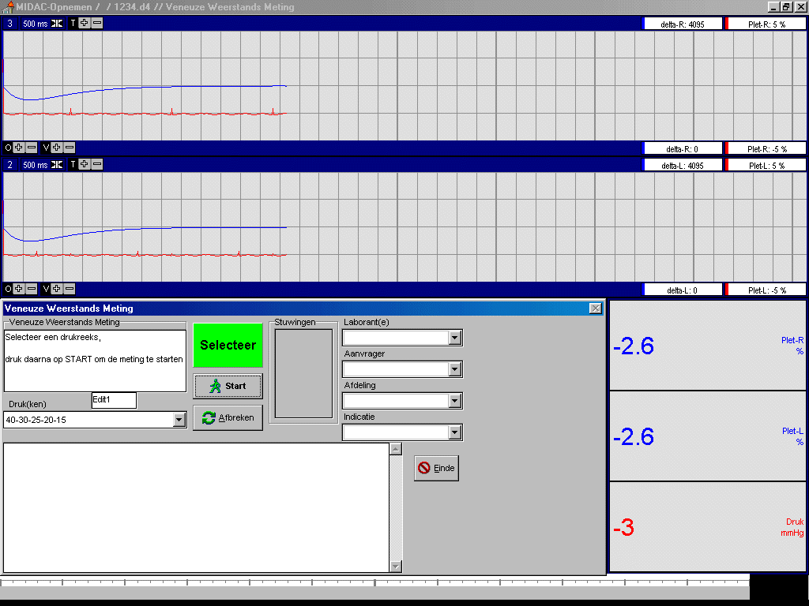
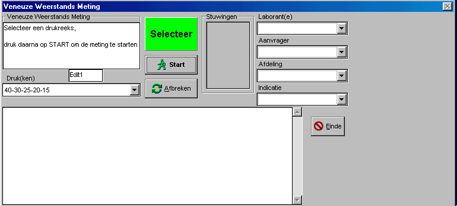
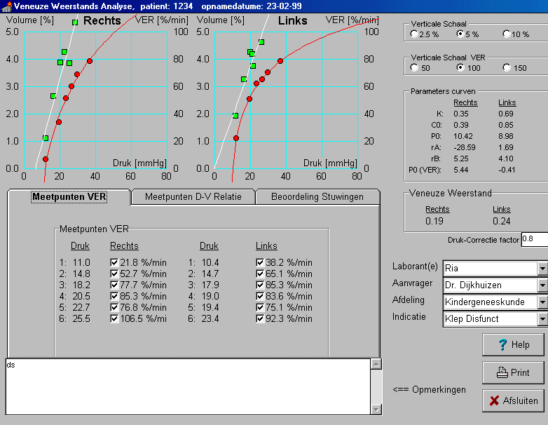
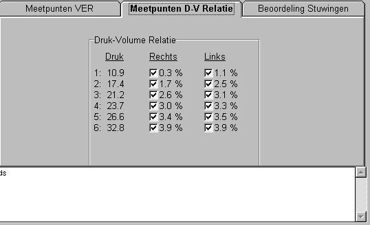
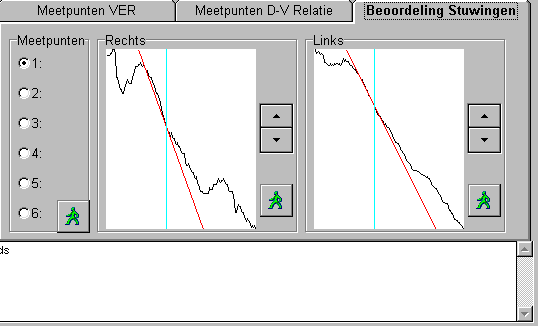

RF 2, Onset Systolische Bloeddruk
|
Met deze rekenfunctie wordt de Veneuze Weerstand (zie ook achtergrond) in twee extremiteiten gelijktijdig bepaald.
De Venous Emptying Rate (VER), welke de basis vormt voor de veneuze weerstands-berekening, kan bij maximaal 10 drukken worden bepaald. De ingestelde druk wordt zeer snel aangebracht (vanuit een geregeld reservoir) en wordt ook tijdens het verloop van de meting continue (bij-)geregeld. Het (relatieve) volume wordt gemeten met "kwiktouwtjes".
Voor het instellen van de drukken kan gekozen worden uit een aantal voorgeprogrameerde drukreeksen. Daarnaast kunnen afzonderlijke drukken worden toegevoegd.
Nadat de opname geheel is afgerond, worden de metingen automatisch verwerkt en wordt eveneens automatisch de veneuze weerstand bepaald. Alle relevante tussen-resultaten van de metingen zijn beschikbaar op het scherm en kunnen handmatig worden uitgeschakeld of gecorrigeerd.De resutaten van deze wijzigingen zijn direct zichtbaar.
De ge-analyseerde data kan in een rapport worden afgedrukt, waarin naast de grafische en numerieke gegevens van meting ook de patientgegevens (exclusief de naam van de patient) staan vermeld.
Er zijn twee "noodstop-knoppen" in het systeem ingebouwd.
Na het starten van een nieuwe opname wordt onderstaand scherm getoond (afhankelijk van de scherm-resolutie kan de exacte grootte van de verschillende onderdelen afwijken, onderstaande opname is gemaakt bij een resolutie van 1000 * 800).

 In het bovenste signaal venster wordt het (relatieve) volume (rood) van de rechter extremiteit getoond.
In het bovenste signaal venster wordt het (relatieve) volume (rood) van de rechter extremiteit getoond.
Bij de start van iedere nieuwe druk wordt de grafiek gewist en start de grafiek opnieuw aan de linkerkant van het venster. De breedte van het venster is zo ingesteld dat de gehele vulfase en de gehele leegloop fase op 1 scherm passen.
Tevens wordt in dit venster de afgeleide (blauw) van het volume getoond, waardoor goed beoordeeld kan worden wanneer er zich een evenwicht heeft ingesteld (immers dan is de afgeleide 0). De afgeleide is redelijk sterk gefilterd, teneinde stoorpieken te onderdrukken. Hierdoor is de arteriële pulsatie slechts zwak te zien in de afgeleide.
 Het middelste signaalvenster bevat dezelfde informatie voor de linker extremiteit.
Het middelste signaalvenster bevat dezelfde informatie voor de linker extremiteit.
 Rechtsonder staat de actuele cuff-druk in [mmHg] en de beide plethysmograaf signalen nog eens numeriek weergegeven.
Rechtsonder staat de actuele cuff-druk in [mmHg] en de beide plethysmograaf signalen nog eens numeriek weergegeven.
 Linksonder staat het besturingsvenster, waarover hieronder meer.
Linksonder staat het besturingsvenster, waarover hieronder meer.
De gehele besturing van de opname kan in principe gebeuren door het indrukken van de ENTER-toets, danwel de SPATIEBALK, omdat onder normale omstandigheden het focus op de "START"-toets staat.
Het status veld (dat in de verschillende fasen van de meting van kleur en tekst veranderd) geeft met een enkel woord de fase van de meting aan: Selekteer / Start / Vullen / Leeglopen / Nul-Volume (NoodStop). Links boven staat een meer uitgebreide beschrijving van de fase en hoe te handelen. Geheel rechts krijgt een overzicht van de geplande en reeds uitgevoerde stuwingen.

Het verloop van de meting gaat als volgt:
Tijdens of na het opnemen van een meetpunt kan men reeds besluiten een meetpunt te verwijderen. Dit kan ten alle tijde gebeuren door het indrukken van de toets "Afbreken". De cuffs worden dan leeggelaten, er wordt een marker gezet, zodat de laatste meting wordt genegeerd en programma springt weer in de wacht stand, teneinde middels de starttoets weer met de laatst aangeboden druk te starten.
Als alle gewenste drukken is gemeten, sluit de meting af en analyseer de meting door hem te bekijken (tevens kan dan een patiënt-rapport van deze meting worden afgedrukt.
|
tekst en kleur van het status veld |
Acties van het systeem |
|
Selecteer of Volgende |
Wacht op het uitvoeren van een nieuw meetpunt, dus wacht tot op de starttoets wordt gedrukt |
|
Vullen |
De cuffs worden snel gevuld tot de gewenste druk, wachten totdat het volume van beide extremiteiten gestabiliseerd is, dan op de start-toets drukken |
|
Legen |
De cuffs worden snel leeggelaten, wachten totdat de volumina van beide extremiteiten gestabiliseerd is, dan op de start-toets drukken |
|
Nul-Volume |
Een korte tijd het nul-volume meten en opslaan, dan wordt automatisch naar de wacht stand teruggekeerd |
|
Noodstop |
Bezig met het uitvoeren van een geconditioneerde "noodstop" de cuffs worden leeggelaten, markering in de opname aanbrengen daarna wordt automatisch naar de wacht stand teruggekeerd |
Per meting worden de volgende parameters bepaald en opgeslagen:
Door bij een aantal drukken de VER te bepalen, wordt een relatie tussen VER en druk verkregen. De helling van deze grafiek is de Veneuze Weerstand.
Zo ziet het analysescherm van de veneuze weerstandsmeting er uit

Rechtsboven zitten aankruisvakjes waarmee de vertikale assen van de grafiek kunnen worden ingesteld.
De meetpunten van de druk-volume relatie zijn de ronde bolletjes. De geaccepteerde meetpunten zijn rood ingekleurd (zwart op de printer), niet geaccepteerde punten zijn open. De rode lijn geeft de druk-volume relatie weer, en is berekend door een fit volgens de Levenberg-Marquadt benadering.
Het aan-/uitzetten van specifieke meetpunten kan op 2 manieren gebeuren, door op het desbetreffende meetpunt in de grafiek te klikken met de muis, door op het corresponderende punt in de meettabel te klikken (zie plaatje hieronder).
De meetpunten van het Venous Emptying Rate worden aangegeven door de vierkantjes. Geaccepteerde meetpunten zijn groen ingekleurd, niet geaccepteerde meetpunten zijn open. Het aan- en uitzetten van deze meetpunten gaat eveneens door klikken op het meetpunt, danwel op de corresponderende waarde in de tabel.
Met de Print knop kan een patient rapport van deze opname, inclusief de grafische plaatjes worden afgedrukt.

|
Ter controle en correctie wordt het volume 0.1 seconde voor het openen van de cuff's en 1 seconde na het openen van de cuff's getoond. LET OP: de grafiek is maximaal opgerekt, teneinde de helling goed te kunnen bepalen. |
 |
De licht blauwe lijn geeft het moment 0.5 seconde na het openen van de cuff's aan.
De rode lijn geeft de Venous Emptying Rate (VER) aan.
De helling kan worden gecorrigeerd door de op/neer knoppen en door op een punt in de grafiek te klikken. In dat laatste geval zal de rode lijn door het punt t=0.5 lopen en de positie van de muiscursor. Alle berekeningen worden dan opnieuw uitgevoerd, zodat direct het totale resultaat zichtbaar is.
Indien men niet tevreden is over een zelf gecorrigeerde raaklijn, dan kan de helling opnieuw door de computer worden bepaald door op het bijbehorende groene mannetje te drukken. Wil men alle raaklijnen door de computer opnieuw laten bepalen, druk dan op het meest linkse groene mannetje (er wordt om een extra bevestiging gevraagd).
Vanzelfsprekend worden alle handmatig toegevoegde wijzigingen (meetpunten uitschakelen en helling corrigeren) opgeslagen bij de opname.
De plethysmograaf wordt voorafgaande aan het aanbieden van een nieuwe druk gebalanceerd.
Voorgeprogrammeerde drukreeksen
40 - 30 - 25 - 20 - 15
40 - 35 - 30 - 25 - 20 - 15
Enkelvoudige drukken
10 15 20 25 30 35 40 45 50
55 60 65 70 75 80 85 90 95 100
Andere drukreeksen of drukken kunnen eenvoudig door de Instrumentele Dienst worden toegevoegd.
101 de toestand van alle checkboxes
102 de hellings-correctie factoren van links
103 de druk-correctie factor
102 de hellings-correctie factoren van rechtss
1 = plethysmograaf rechts (relatief volume)
2 = plethysmograaf links (relatief volume)
3 = druk in manchetten
1 = afgeleide plethysmograaf rechts
2 = afgeleide plethysmograaf links
De plethysmograaf signalen worden gefilterd teneinde een betrouwbare afgeleide te bepalen.
De afgeleide worden als uitgangs signaal teruggegeven.
F1 = DRUK-VOLUME, vlak voor het openen van de cuffs
F2 = DRUK-VOLUME, het openen van de cuffs
F3 = DRUK-VOLUME, opnemen nul-volume
F4 = niet gebruiken (nodig voor pompfunctie test)
F5 = niet gebruiken (nodig voor pompfunctie test)
F6 = Negeren meetpunt
F7 = F7 (vrij)
F8 = F8 (vrij, vrije tekst)
© Copyright Instrumentele Dienst, 1999 SM, last updated 22-10-1999
SM, last updated 22-10-1999